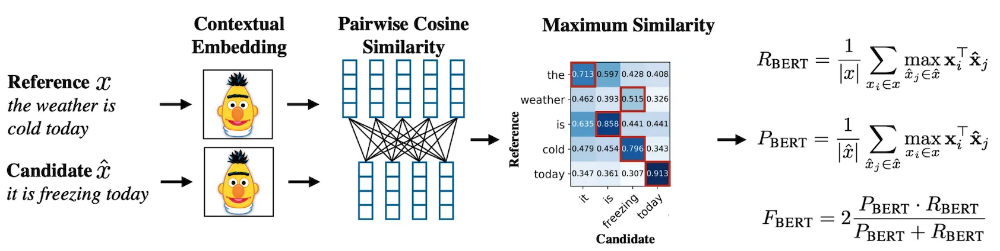
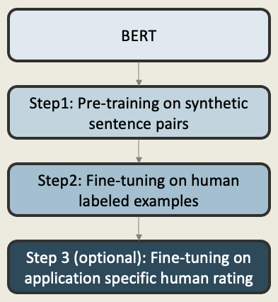
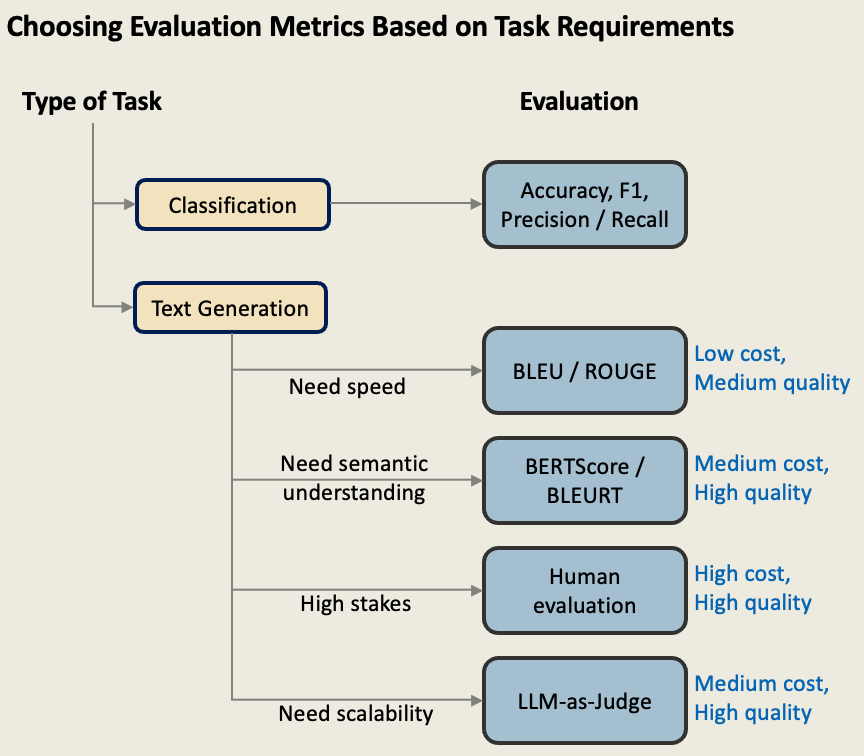

Evaluating Language Model Outputs: Metrics, Models, and Benchmarks
1 Introduction:
NLP evaluation measures how well language models actually work. It answers basic questions: Is this model good enough? Can we trust it with real users? But here’s the challenge—testing language models isn’t like testing regular software. When code breaks, it’s obvious. When a language model fails, it might write something that sounds perfect but is completely wrong. A model might be 92% accurate overall but fail every time it sees sarcasm. This is what makes NLP evaluation so tricky: we’re measuring how well computers understand the messy, complex world of human language.
Why It Matters Now More Than Ever
In 2023 alone, we saw an AI chatbot fail to recognize suicide warning signs (leading to a death), lawyers submit fake AI-generated cases to courts, and Air Canada forced to honor a refund policy its bot invented. As Chip Huyen warns: “The more AI is used, the more opportunity there is for catastrophic failure.” The smarter our models get, the harder they become to evaluate. It’s easy to check a kid’s math homework, but verifying if an AI’s medical advice is accurate requires medical expertise. We need good evaluation to build better models, but we need expertise to do good evaluation.
Two Types of Tasks, Two Different Challenges
Closed-ended tasks have clear right answers (Is this email spam? What’s the sentiment?). We can use traditional metrics like accuracy and precision, but even these “simple” tasks suffer from shortcuts, dataset problems, and human labeling errors.
Open-ended tasks have no single right answer (Write a summary, translate this text, answer this question). Traditional metrics completely fail here. Word-matching might say “Heck no!” is similar to “Heck yes!” because they share words.
What’s Ahead
This overview covers how to evaluate both closed and open-ended tasks, why current methods fail and what’s replacing them, major problems like contamination and bias, and practical solutions for real-world applications.
2 Closed-Ended Tasks
Closed-ended tasks are widely used in NLP evaluation because they provide clear right or wrong answers. Since the model’s output is limited to a small set of predefined choices—often fewer than ten—they make it easier to compare models using standard metrics like accuracy, precision, recall, and F1-score. This structure allows for objective evaluation, consistent benchmarking, and easier tracking of progress over time.
Bounded Output Space: Unlike text generation where models can produce any sequence of tokens, closed-ended tasks constrain outputs to predefined categories or structured formats.
Objective Evaluation: Success can be measured automatically using established metrics from classical machine learning—accuracy, precision, recall, and F1-score.
Reproducible Benchmarks: Standard datasets enable fair comparison across models and over time.
Systematic Progress Tracking: Clear metrics allow the field to monitor advancement and identify when models have genuinely improved.
While this constraint makes evaluation more straightforward than open-ended generation, closed-ended tasks still present significant challenges that can mislead researchers and practitioners. Understanding these problems is important because closed-ended evaluation is often the first test of model quality, affecting research focus and decisions about which models to deploy.
2.1 Evaluation Metrics for Closed-Ended Tasks
Understanding how to measure performance is fundamental to closed-ended evaluation. Different metrics serve different purposes and can lead to very different conclusions about model quality. Following metrics evaluate performance on individual labeled tasks:
- Accuracy: Percentage of correct predictions (simple but can be misleading with imbalanced data).
- Precision: Of all positive predictions, how many were correct? (important when false alarms are costly).
- Recall: Of all actual positive cases, how many were found? (important when missing cases is costly).
- F1-Score: Harmonic mean of precision and recall (balances both concerns).
These metrics are typically applied to standardized datasets called benchmarks, which we’ll explore in the next section. Like standardized tests for AI, benchmarks enable fair comparison between models from different research groups and track progress over time.
2.2 Types of Closed-Ended Tasks
| Task Type | Description | Example | Popular Benchmarks | Common Pitfalls |
|---|---|---|---|---|
| Sentiment Analysis | Classify emotional tone (positive/negative/neutral) | “Read the book, forget the movie!” → Negative | SST, IMDB, Yelp | Fails on sarcasm, irony, cultural context |
| Textual Entailment | Does sentence B logically follow from sentence A? | Premise: “A soccer game with multiple males playing” Hypothesis: “Some men are playing sport” → Entailment |
SNLI, MultiNLI, RTE | Shortcut learning (e.g., keyword overlap); see SNLI issues |
| Named Entity Recognition (NER) | Identify and classify proper nouns | “Apple released the iPhone.” → [Apple–ORG], [iPhone–PRODUCT] | CoNLL-2003 | Ambiguity: Apple (fruit vs company) |
| Part-of-Speech Tagging | Assign grammatical categories to words | “The quick brown fox” → [The–DET], [quick–ADJ], [brown–ADJ], [fox–NOUN] | Penn Treebank (PTB) | Often used as foundation for parsing & other tasks |
| Coreference Resolution | Determine pronoun references | “Mark told Pete lies about himself. He should have been more truthful.” → “He” = Mark | WSC, OntoNotes | Requires deep context or world knowledge |
| Question Answering | Extract answers from passage | Context: “The ESA was passed in 1973.” Q: “When was it passed?” → 1973 |
SQuAD, SQuAD 2.0 | Models memorize patterns or position, not true reasoning |
These individual tasks can also be grouped into multi-task benchmarks that evaluate general language understanding across a range of closed-ended challenges. SuperGLUE is one of the most prominent such benchmarks.
2.3 Multi-Task Benchmark: SuperGLUE
While the previous section outlined individual closed-ended tasks, real-world evaluation often demands a unified benchmark that spans multiple task types. SuperGLUE is a widely adopted closed-ended multi-task benchmark created to evaluate broad general language understanding. It builds on its predecessor (GLUE) with harder tasks, more robust metrics, and an emphasis on reasoning.
SuperGLUE combines a diverse set of tasks—ranging from entailment and coreference resolution to causal reasoning and word sense disambiguation—designed to holistically assess a model’s linguistic and reasoning capabilities across multiple dimensions.
Tasks in SuperGLUE:
| Task | Description | Type |
|---|---|---|
| BoolQ, MultiRC | Reading comprehension | QA / Inference |
| CB, RTE | Natural language inference | Entailment |
| COPA | Causal reasoning (cause/effect) | Reasoning |
| ReCoRD | Reading comprehension with commonsense reasoning | QA / Commonsense |
| WiC | Word meaning in context | Word Sense Disambiguation |
| WSC | Coreference resolution | Coreference |
Together, these tasks go beyond surface-level prediction—testing abilities like logical reasoning, commonsense application, coreference tracking, and contextual understanding.
Leaderboard Highlights (v2.0):
To measure and compare model performance on SuperGLUE, an official leaderboard tracks results across all tasks using standardized metrics. The v2.0 leaderboard showcases most advanced models—ranging from parameter-efficient Mixture of Experts (MoE) systems to massive transformer-based architectures—offering a clear snapshot of the state of the art in general language understanding.
- Top models: Vega v2, ST-MoE-32B, ERNIE, PaLM 540B, T5
- Metrics used: Accuracy, F1 score, Exact Match, Gender Parity, etc.
The leaderboard emphasizes balanced generalization, rewarding models that perform consistently well across diverse task types—not just a few. This makes it a reliable benchmark for tracking progress toward broadly capable language models.
2.4 Domain-Rich Multi-Task Benchmark: MMLU
While SuperGLUE focuses on general linguistic reasoning, Massive Multitask Language Understanding (MMLU) shifts the spotlight to domain knowledge. It has rapidly become the de facto benchmark for evaluating a model’s grasp of academic and professional subjects—effectively acting as a proxy for general intelligence in many LLM leaderboards.
What is MMLU?
- 57 subjects spanning elementary math, anatomy, law, philosophy, computer science, US history, and more
- Multiple-choice format (A, B, C, D), with ~100 questions per subject
- Balanced question design that mimics real academic tests and professional licensing exams
- Closed-book evaluation testing what the model has internalized from pretraining
MMLU has emerged as a standardized benchmark for evaluating foundational knowledge across domains. It allows for direct accuracy-based comparisons between models of different sizes and architectures. Performance gains have been dramatic—rising from ~25% (random guessing) to over 90% accuracy in just four years.
Note: MMLU is often treated as a shortcut for measuring “general intelligence,” but that can be misleading. What it really tests is how well a model can recall facts and recognize patterns—not necessarily how well it can reason or think abstractly. We’ll explore these limitations later.
MMLU in Modern LLM Leaderboards
Modern LLMs—including GPT-4, Claude 3, Gemini, LLaMA 3, and PaLM—routinely report MMLU scores as a primary metric. As with SuperGLUE, MMLU supports multi-subject generalization, but with a stronger emphasis on world knowledge rather than linguistic nuance.
SuperGLUE vs MMLU: A Comparison
| Aspect | SuperGLUE | MMLU |
|---|---|---|
| Focus | Language reasoning | Factual subject knowledge |
| Format | Varied NLP tasks | Multiple choice |
| Tasks / Subjects | 8 tasks | 57 subjects |
| Primary Skill Tested | Inference, disambiguation, coreference | Retained domain knowledge |
| Metric | Accuracy, F1, etc. | Accuracy only |
While both are multi-task benchmarks, they evaluate very different capabilities—SuperGLUE emphasizes reasoning and understanding, whereas MMLU stresses factual recall across disciplines.
2.5 Challenges in Closed-Ended Evaluation
Metric Selection: Different metrics highlight different aspects of model performance. For example: Accuracy can be misleading on imbalanced datasets—it may just reflect majority-class predictions. Precision measures correctness (fewer false positives), while Recall measures completeness (fewer false negatives). Using a single metric in isolation—especially on skewed tasks—can hide a model’s weaknesses.
Metric Aggregation: Benchmarks like SuperGLUE combine many tasks, each with its own metric (e.g., F1, accuracy, loss). Simply averaging scores can give an incomplete picture. Some tasks are easier than others, and their metrics scale differently. Without proper weighting or normalization, overall scores may not reflect true performance.
Label Quality: Poorly defined or inconsistent labels can introduce noise into both training and evaluation. This reduces reliability and makes it hard to tell if performance differences are meaningful or just due to annotation issues.
Spurious Correlations: Models may rely on patterns or keywords rather than real understanding.
- Example (SNLI):
- Premise: “The economy could be still better.”
- Hypothesis: “The economy has never been better.”
- Model might infer contradiction simply due to the word never rather than actual reasoning
- Premise: “The economy could be still better.”
- Example (SNLI):
Annotation Artifacts and Dataset Bias: Some datasets contain structural biases—for example, QA answers often appear at the start of a passage. Models may exploit these shortcuts without real comprehension. Stylistic cues (e.g., sentence length or formality) may also correlate with certain labels, inflating scores without reflecting true understanding.
Adversarial Robustness: Small tweaks—like changing a word or rephrasing a sentence—can confuse models even if the meaning stays the same. This shows a lack of generalization. Robust evaluation should test whether models maintain performance under such paraphrased or adversarial inputs.
This highlights that even well-defined tasks require evaluation beyond raw accuracy to capture true model behavior and ensure robustness.
3 Open-Ended Text Generation
Open-ended generation models, such as large language models (LLMs), can produce diverse free-form outputs like summaries, translations, stories, or answers to instructions. Unlike classification models that generate a fixed label or number, open-ended models return entire sequences of text—often with many valid responses for the same input.
This flexibility makes them powerful but difficult to evaluate. There’s rarely a single “correct” output, and even seemingly unrelated completions may still be valid. For example, the prompt “Tell me something interesting about the moon” could yield many accurate and fluent yet different answers.
Evaluating such responses goes beyond simple reference matching—it requires assessing coherence, fluency, relevance, factual accuracy, style, and semantic alignment. As a result, evaluation of open-ended generation must adopt a more nuanced, multi-faceted approach.
The following sections outline key evaluation methods and challenges.
3.1 Content Overlap Metrics
These methods compute similarity based on surface-level word overlap between the generated text and a human-written reference. They are fast, interpretable, and have long been used in machine translation, summarization, and captioning. However, they often fail to recognize valid paraphrases or semantic equivalence.
Popular metrics:
3.1.1 BLEU (Bilingual Evaluation Understudy)
- Focus: Precision-oriented n-gram overlap
- Calculation: Geometric mean of 1-gram through 4-gram precision, with brevity penalty
- Use Case: Machine Translation — how much of the generated text appears in the reference
- Formula: \[ \text{BLEU} = \text{BP} \cdot \exp\left( \sum_{n=1}^{N} \frac{1}{N} \cdot \log(p_n) \right) \] where \(p_n\) is n-gram precision and BP is brevity penalty.
3.1.2 ROUGE (Recall-Oriented Understudy for Gisting Evaluation)
- Focus: Recall-oriented n-gram overlap
- Variants: ROUGE-1: Unigrams, ROUGE-2: Bigrams, ROUGE-L: Longest common subsequence
- Use Case: Summarization — how much of the reference is captured in the generated text
- Formula (ROUGE-L F1 score):
\[ \text{ROUGE-L} = \frac{(1 + \beta^2) \cdot \text{Precision} \cdot \text{Recall}}{\text{Recall} + \beta^2 \cdot \text{Precision}} \] where:- Precision = \(\frac{LCS}{\text{candidate length}}\)
- Recall = \(\frac{LCS}{\text{reference length}}\)
- LCS = Longest Common Subsequence
- \(\beta\) balances recall and precision (often \(\beta = 1\))
Limitation: N-gram metrics have no concept of meaning. They fail when different words express the same idea.
Example 1:
Reference: "Heck yes!"
| Generated Output | BLEU Score | Semantic Meaning |
|---|---|---|
"Yes!" |
67% | Correct |
"You know it!" |
Low | Correct |
"Yup" |
0% | Correct |
"Heck no!" |
67% | Wrong (opposite meaning) |
These metrics reward lexical matches even when the meaning is incorrect.
Example 2:
Reference: "The innovative startup secured substantial funding"
Generated A:
"The creative company obtained significant investment"
→ 0% BLEU overlap, perfect semantic matchGenerated B:
"The innovative startup funding substantial secured"
→ 83% BLEU overlap, grammatically broken and semantically wrong
BLEU would incorrectly score Generated B higher than A due to word overlap.
3.2 Model-Based Metrics
As NLP systems generate increasingly fluent and diverse outputs, traditional word-overlap metrics like BLEU and ROUGE often fail to capture deeper aspects of quality such as semantic fidelity, naturalness, and paraphrasing. To overcome these limitations, researchers have developed model-based evaluation metrics that harness the semantic understanding of pretrained language models.
Two widely adopted examples are BERTScore, which uses contextual embeddings for token-level semantic similarity, and BLEURT, which is trained to predict human quality judgments directly.
3.2.1 BERTScore: Semantic Matching with Contextual Embeddings
BERTScore measures how semantically close a generated text is to a reference by comparing their contextualized token embeddings from BERT. It operates in three main steps:
- Token Embedding: Each token is mapped to a contextual vector using a pre-trained BERT model.
- Similarity Matrix: Cosine similarity is computed between each candidate and reference token.
- Greedy Matching:
- Precision: Max similarity for each candidate token to reference.
- Recall: Max similarity for each reference token to candidate.
- F1 Score: Harmonic mean of the two.
- Precision: Max similarity for each candidate token to reference.
Optional Enhancements
- IDF Weighting: Emphasizes rare and informative words.
- Baseline Rescaling: Normalizes scores for consistency.

Example:
- Reference: “The weather is cold today”
- Candidate: “It is freezing today”
BLEU would assign a low score due to low word overlap. BERTScore correctly identifies that “cold” and “freezing” are semantically similar and aligns “it” with “weather,” producing a high score.
3.2.2 BLEURT: Learned Quality Estimation
BLEURT offers a learning-based alternative to similarity-based metrics like BERTScore. Instead of relying on heuristic rules, BLEURT is trained to predict human quality judgments directly using fine-tuned BERT models.
- Pre-training: Initialized with BERT and trained on synthetically modified sentence pairs. For example, original sentences and their noisy or paraphrased versions. This helps the model learn how edits, errors, or rewordings affect meaning.
- Fine-tuning: BLEURT is fine-tuned using real sentence pairs labeled by humans in shared tasks. This allows it to learn what humans consider high- or low-quality responses.
- (Optional) Application-Specific Fine-tuning: For custom use cases (e.g., legal, medical, or customer support), BLEURT can be further fine-tuned using domain-specific human feedback, improving alignment with task-specific quality standards.
Given a candidate and reference sentence, BLEURT returns a scalar score, typically between -1 and 1, reflecting how closely the candidate aligns with human expectations in meaning, fluency, and grammatical correctness.

Example:
- Reference: “The weather is cold today”
- Candidate: “It is freezing today”
Despite limited word overlap, BLEURT assigns a high score, recognizing semantic equivalence and fluent expression — something traditional metrics might miss.
3.2.3 Summary: When to Use Which?
| Metric | Strengths | Limitations |
|---|---|---|
| BERTScore | Fast, interpretable; captures token-level semantics | Relies on heuristic alignment; less fluency-aware |
| BLEURT | Trained on human ratings; captures fluency and variation | More computationally intensive; less transparent |
Both metrics represent a shift toward evaluation methods that better reflect semantic correctness, paraphrasing, and generation quality. BERTScore excels in semantic alignment, while BLEURT better captures fluency and natural language variation.
3.3 The Reference Quality Crisis
Reference-based evaluation metrics—such as BLEU, ROUGE, BERTScore, and BLEURT—are only as reliable as the references themselves. If the reference is flawed—due to poor quality, weak alignment, or narrow scope—it can mislead the metric and penalize otherwise valid model outputs.
3.3.1 Case Study: CNN/Daily Mail Summarization
A widely used benchmark for summarization, the CNN/Daily Mail dataset, illustrates the pitfalls of poor reference quality in real-world evaluation. The dataset was constructed by collecting CNN news articles along with their accompanying bullet-point highlights. These highlights, written by journalists under deadline pressure, were used as “gold standard” summaries to train and evaluate models.
However, closer scrutiny revealed major issues. The highlights were often incomplete, loosely structured, or inconsistent in tone. They sometimes emphasized trivial surface-level details over summary-worthy content, and rarely reflected what real users actually wanted from a summary. This raised serious concerns about their reliability as evaluation references.
Several studies have examined this issue. For example, Fabbri et al. (2021) found that common metrics like ROUGE showed weak or near-zero correlation with human quality judgments under such conditions. However, when expert-written or carefully revised references were used, the same metrics exhibited significantly stronger correlation (r ≈ 0.6–0.7), suggesting that the evaluation metric itself wasn’t broken—the references were. Similar conclusions were drawn by Akter et al. (2022), who proposed a semantic-aware alternative and highlighted how poor references in CNN/Daily Mail limit metric reliability.
3.3.2 Broader Challenges with Reference-Based Evaluation
Beyond CNN/Daily Mail, reference quality issues are widespread across many NLP benchmarks:
- Sparse or Limited References: Many benchmarks provide only a single reference output, even though multiple diverse and valid responses may exist.
- Stylistic or Tonal Inconsistency: Reference texts often vary in formality, phrasing, or verbosity, which can skew similarity-based metrics.
- Task Misalignment: Some references emphasize different aspects than what users or tasks actually prioritize.
- Noisy or Imperfect Texts: Crowdsourced or time-constrained references may include grammatical mistakes, ambiguity, or shallow reasoning.
These limitations are not just theoretical. They directly influence metric scores and evaluation outcomes in ways that can misrepresent model performance.
3.3.3 Consequences
These reference quality problems have several downstream consequences:
- Misleading comparisons between models
- Underestimation of strong models that diverge stylistically from the reference
- Optimization toward flawed targets (“gaming the metric”)
- Motivation to explore Reference-Free Evaluation, which avoids dependency on flawed gold standards
3.4 Reference-Free Evaluation
Instead of comparing model outputs to human-written references, reference-free evaluation methods attempt to judge quality directly—without requiring a gold standard. This is especially useful in open-ended generation tasks where multiple outputs may be valid, and reference quality is often poor (as discussed in Section 3.3).
Reference-based metrics can penalize valid outputs that differ in wording or structure from the reference. As an alternative, reference-free methods evaluate the generation directly—by learning quality predictors or leveraging language models as judges.
3.4.1 Traditional Reference-Free Approaches
Before the rise of large language models (LLMs), researchers explored simpler reference-free methods by training regression models to predict human quality ratings.
- Input: Model-generated output only (no reference)
- Output: Predicted quality score, usually trained on large annotated datasets
- Limitation: Required costly human-labeled examples and struggled to generalize across domains or tasks
These approaches demonstrated the possibility of reference-free evaluation, but lacked robustness and flexibility.
3.4.2 LLM-as-Judge: A Paradigm Shift
Recent advances have shown that LLMs like GPT-4 can act as sophisticated, multi-criteria evaluators—scoring generated outputs with surprisingly high alignment to human judgments.
Methodology
A typical prompt might look like this:
Original Article: [article text]
Generated Summary: [summary text]Evaluate on a scale of 1 to 5 based on:
- Accuracy (factual correctness)
- Completeness (coverage of key points)
- Clarity (writing quality and coherence)
- Conciseness (appropriate length and focus)Score: ___
Explanation: ___
This format enables LLMs to perform nuanced evaluation—without needing a gold reference—and produce both numeric ratings and reasoning.
Advantages of LLM-Based Evaluation
Research has shown that LLM-as-judge methods offer several compelling benefits:
- Multi-dimensional: Can evaluate factuality, fluency, style, etc.
- Scalable and Fast: ~100× faster and cheaper than human annotators
- Consistent: Inter-rater agreement higher than among humans (85% vs 67%)
- Correlated with Human Judgments: Pearson correlation of r = 0.8–0.9 in many tasks
GPT-4 often shows higher agreement with humans than humans show with each other.
Popular Benchmarks
Several modern benchmarks now use LLMs as evaluation agents:
- AlpacaEval: GPT-4 judges instruction-following responses
- MT-Bench: Evaluates multi-turn dialogues with GPT-based raters
- Chatbot Arena: Combines LLM judgments with human preferences at scale
These benchmarks have helped validate the use of LLMs for practical, scalable evaluation.
Limitations and Biases of LLM-as-Judge Methods
Despite their promise, LLM-based evaluations are not without flaws. Known issues include:
- Self-Preference Bias
- LLMs (e.g., GPT-4) tend to prefer outputs generated by themselves
- Mitigation: Use diverse evaluator models and blind prompts
- Level of Effort: Moderate — requires model access and prompt engineering adjustments
- LLMs (e.g., GPT-4) tend to prefer outputs generated by themselves
- Length Bias
- Tendency to favor longer outputs (~70% of the time), regardless of quality
- Mitigation: Normalize for length or include brevity constraints
- Level of Effort: Low — can be addressed with prompt tuning and post-processing rules
- Tendency to favor longer outputs (~70% of the time), regardless of quality
- Style Bias
- Preference for structured or bullet-style outputs over more creative formats
- Mitigation: Introduce style calibration or reference multiple formats during scoring
- Level of Effort: Moderate to High — requires developing style-sensitive evaluation logic
- Preference for structured or bullet-style outputs over more creative formats
- Cultural and Demographic Bias
- Reflect evaluator training data (e.g., Western academic tone)
- Mitigation (long-term goal): Encourage more inclusive evaluator design and culturally diverse data sources for training and evaluation
- Level of Effort: High — requires curating diverse datasets and broader systemic changes to training pipelines
- Reflect evaluator training data (e.g., Western academic tone)
These limitations suggest that while LLM-based evaluation is powerful, careful prompt design, evaluator diversity, and bias monitoring are essential.
3.5 Human Evaluations
Despite rapid advances in automatic metrics, human judgment remains the gold standard for evaluating open-ended tasks. Automated scoring methods often miss subtle details, personal opinions, and user preferences—especially in tasks like summarization, dialogue, or creative generation. Human evaluation remains essential for validating whether model outputs are helpful, coherent, accurate, and aligned with human expectations.
What Human Evaluation Measures
Evaluators typically assess a model’s output along key quality dimensions:
- Fluency – Is the text grammatically correct and natural?
- Coherence – Does the output flow logically and make sense throughout?
- Relevance – Is the response appropriate to the input and task?
- Factual Accuracy – Are the claims factually correct?
- Completeness – Does the output cover all necessary points?
- Originality – Is the output non-redundant and creative?
These dimensions align closely with human expectations in real-world applications like summarization, dialogue, and question answering.
Evaluation Methodologies
There are two primary approaches to scoring: absolute scoring and comparative judgment.
Absolute scoring methods use Likert scales, where annotators rate outputs numerically across different dimensions—typically on a 1-to-5 or 1-to-7 scale. While this provides granular data, it can introduce subjectivity due to differences in annotators’ interpretations of the scale.
Comparative methods, such as pairwise ranking or best–worst scaling, tend to be more robust. In pairwise ranking, annotators compare two or more outputs and choose the better one. Best–worst scaling takes this further by having annotators identify both the best and worst examples from a set. These approaches reduce variability and are commonly used in benchmark leaderboards and model comparisons.
3.5.1 The Human Evaluation Crisis
While human evaluations are critical, they are often plagued by reproducibility, consistency, and cost challenges.
An analysis of NLP papers from 2015–2020 found that only 5% of human evaluation studies were fully reproducible. The primary culprits were lack of methodological detail and unavailability of materials, which made it difficult for others to verify or replicate the results. Common issues included missing annotator guidelines, inconsistent scoring criteria, and the absence of publicly shared data. This undermines scientific rigor and prevents meaningful comparisons across models and studies.
Even when guidelines are clear, annotator disagreement remains high. Studies have shown inter-annotator agreement rates hovering around 60–70%, and for more subjective tasks—like helpfulness or summarization—agreement can drop to as low as 40–50%. For example, in one study on summarization quality, even expert annotators disagreed 30–40% of the time.
Human evaluations are also expensive and time-consuming. Annotators typically charge $15–$30 per hour, and evaluating a single output can take 5–15 minutes. Large-scale evaluations, which require hundreds or thousands of samples, quickly become cost-prohibitive.
Moreover, quality control is non-trivial. Annotators need training, ongoing calibration, and clear rubrics. Without rigorous oversight, annotators may interpret vague instructions differently or apply inconsistent standards. There’s also a natural incentive misalignment: annotators may prioritize speed over quality, while researchers seek careful, nuanced judgments. This tension can lead to superficial or biased evaluations.
3.5.2 Best Practices for Human Evaluation
To mitigate these issues, researchers have proposed several best practices. First, providing clear instructions—including detailed rubrics and examples—can significantly reduce ambiguity. Conducting pilot studies before full-scale evaluation helps refine the task and catch misunderstandings early.
Using multiple annotators (typically 3–5 per example) improves reliability, especially when combined with inter-annotator agreement tracking. Regular calibration sessions and feedback loops ensure that annotators stay aligned over time and surface discrepancies before they affect results.
When applied carefully, these practices make human evaluation more consistent, interpretable, and fair.
Note: Human scores should never be compared across studies, as prompts, instructions, and annotators vary widely.
3.6 Evaluation Pitfalls and Biases
Automatic metrics are only as good as the references they rely on. If reference texts are low-quality, misaligned with the task, or poorly written, evaluation results can be misleading. For example, studies have shown that ROUGE is poorly correlated with human preferences unless expert-written references are used.
Beyond reference quality, evaluation metrics can suffer from spurious correlations—patterns that have nothing to do with true output quality. For instance, length bias leads to a ~70% preference for longer outputs, regardless of informativeness. Similarly, models often benefit from list bias (bullet-style responses), position bias (left-vs-right placement in comparisons), and self-bias, where models like GPT-4 subtly favor outputs they generated themselves.
These pitfalls suggest that even widely used metrics can be unintentionally skewed. Careful design and manual oversight are crucial to avoid false confidence in metric-based scores.
3.7 Broader Challenges
- Consistency Issues: Results can vary significantly based on small changes in prompt style or decoding strategy. MMLU scores can fluctuate by up to 15% due to formatting alone—changing “Answer: A” to “A)” or adding “Please” can shift model rankings. This makes benchmark comparisons unreliable when papers don’t specify exact evaluation setups.
- Contamination: Models sometimes perform well on benchmarks because they were trained on test data, not because they generalize. GPT-4’s performance on Codeforces pre-2021 vs post-2021 illustrates this concern. Recent analysis suggests 10-30% of benchmark improvements may reflect contamination rather than genuine capability gains—models scoring 85% on original MMLU might only achieve 65% on contamination-free variants.
- Overfitting: Benchmarks saturate quickly, reducing their long-term usefulness. The pattern is predictable: introduction (40-60% scores) → optimization (rapid progress) → saturation (85-95%) → gaming (exploiting artifacts). GLUE reached human performance within 2 years and required replacement by SuperGLUE.
- Monoculture: A lack of linguistic and cultural diversity—70% of ACL 2021 papers were English-only—limits the generalizability of results. With 85% of NLP benchmarks focusing on English despite 6B non-English speakers globally, models may fail catastrophically in non-Western contexts.
- Single Metric Fallacy: Over-relying on one metric (e.g., accuracy) oversimplifies model performance and can obscure fairness, bias, and usability trade-offs. A customer service chatbot optimized for accuracy might achieve 95% correct answers but sound robotic, leading to poor user satisfaction despite high benchmark scores.
- Evaluation Infrastructure Gaps: 78% of papers don’t specify exact prompts, 65% don’t report model versions or temperature settings, and only 23% provide reproducible evaluation code. This makes meta-analyses impossible and progress measurement unreliable.
These challenges collectively suggest that evaluation metrics provide useful signals but should be interpreted cautiously and combined with multiple assessment approaches.
3.8 Evaluation Tools and Frameworks
Automated Metric Libraries
- Hugging Face Evaluate: 60+ metrics with standardized interface. Best for rapid prototyping and consistent implementation.
- NLTK: Traditional metrics (BLEU, ROUGE, METEOR). Mature and well-tested but slower than modern alternatives.
Model-Based Evaluation
- BERTScore/BLEURT: Semantic similarity using pretrained models. Use for paraphrase-heavy tasks when reference quality varies.
- Comet: Neural MT evaluation framework with high human correlation (r=0.87).
LLM-as-Judge Frameworks
- G-Eval: GPT-4-based evaluation with chain-of-thought reasoning. Cost: ~$0.01-0.05 per evaluation.
- AlpacaEval: Standardized instruction-following evaluation with 85% human agreement.
Comprehensive Suites
- HELM (Stanford): Holistic evaluation across 16 scenarios, 7 metrics. Best for research organizations.
- EleutherAI LM Evaluation Harness: 200+ tasks, open-source. Ideal for reproducible benchmarking.
Selection Guide:

3.9 Key Takeaways
Evaluating open-ended tasks is inherently complex. No single approach—automatic, human, or LLM-based—works universally well across all scenarios.
Traditional metrics like BLEU and ROUGE still serve a role, especially for structured tasks like translation. But for generation tasks involving reasoning, creativity, or nuance, they increasingly fall short. Human evaluations offer deeper insights but remain expensive, slow, and often difficult to reproduce. LLM-based evaluations (like GPT-4 as a judge) are fast, scalable, and correlate better with human preferences than n-gram metrics—yet they can hallucinate scores and inherit training biases.
Practical Recommendations:
- Start with automated metrics for rapid iteration, then validate with human evaluation
- Use multiple metrics rather than relying on a single score
- For high-stakes applications, always include domain expert review
- Consider the evaluation cost vs. application risk trade-off when choosing methods
In practice, the most effective strategy is hybrid: combine multiple metrics, validate with human feedback, and always review outputs manually. Quantitative scores alone can be misleading.
As generative systems grow more powerful and widely deployed, evaluation becomes a critical bottleneck. The future lies in developing evaluation methods that are both scalable and semantically meaningful, while addressing emerging challenges like benchmark contamination and safety alignment. The quality of our evaluation methods will ultimately determine how safely and effectively we can deploy these powerful systems.
4 References & Further Reading
[1] Wang, A., et al. (2019). SuperGLUE: A Stickier Benchmark for General‑Purpose Language Understanding Systems. https://arxiv.org/pdf/1905.00537
[2] Hendrycks, D., et al. (2020). Measuring Massive Multitask Language Understanding (MMLU). https://arxiv.org/pdf/2009.03300
[3] Papineni, K., et al. (2002). BLEU: A Method for Automatic Evaluation of Machine Translation. https://aclanthology.org/P02-1040
[4] Lin, C.-Y. (2004). ROUGE: A Package for Automatic Evaluation of Summaries. https://aclanthology.org/W04-1013
[5] Chang, T., et al. (2020). BERTSCORE: Evaluating Text Generation With BERT. https://arxiv.org/pdf/1904.09675
[6] Sellam, T., et al. (2020). BLEURT: Learning Robust Metrics for Text Generation. https://arxiv.org/pdf/2004.04696
[7] Durmus, E., et al. (2022). Spurious Correlations in Reference‑Free Evaluation of Text Generation. https://arxiv.org/abs/2204.09890
[8] Fabbri, A., et al. (2021). SummEval: Re-evaluating Summarization Evaluation. https://direct.mit.edu/tacl/article/doi/10.1162/tacl_a_00373/100686/SummEval-Re-evaluating-Summarization-Evaluation
[9] Akter, M., et al. (2022). Can We Do Better than ROUGE? Sem-nCG for Evaluating Summarization. https://aclanthology.org/2022.findings-acl.122.pdf
[10] Specia, L., et al. (2010). Quality Estimation for Machine Translation Without Human-Labeled Data. https://www.aclweb.org/anthology/W10-1753.pdf
[11] Su, Y., et al. (2023). Reference-Free Evaluation Metrics for Text Generation: A Survey. https://arxiv.org/pdf/2305.04648.pdf
[12] Rei, M., et al. (2020). Comet: A neural framework for MT evaluation. https://arxiv.org/pdf/2009.09025
[13] Zheng, S., et al. (2023). Judging LLM-as-a-Judge with MT-Bench and Chatbot Arena. https://arxiv.org/pdf/2306.05685
[14] Fu, Y., et al. (2023). G-Eval: NLG Evaluation using GPT-4 with Better Human Alignment. https://arxiv.org/pdf/2303.16634
[15] Tuan, Y., et al. (2021). Quality Estimation without Human-labeled Data. https://arxiv.org/pdf/2102.04020
[16] Celikyilmaz, A., et al. (2020). Evaluation of Text Generation: A Survey. https://arxiv.org/abs/2006.14799
[17] Krishna, K., et al. (2023). LongEval: Guidelines for Human Evaluation of Faithfulness in Long-form Summarization. https://aclanthology.org/2023.eacl-main.121.pdf
[18] Liang, P. et al. (2023). Holistic Evaluation of Language Models. https://arxiv.org/pdf/2211.09110
[19] Zheng, L. et al. (2024). Judging LLM-as-a-Judge with MT-Bench and Chatbot Arena. https://arxiv.org/pdf/2306.05685
[20] Ouyang, L. et al. (2022). Training language models to follow instructions with human feedback. https://arxiv.org/pdf/2203.02155
[21] Anthropic. (2022). Constitutional AI: Harmlessness from AI Feedback. https://arxiv.org/pdf/2212.08073
[22] Wei, J. et al. (2023). Chain-of-Thought Prompting Elicits Reasoning in Large Language Models. https://arxiv.org/pdf/2201.11903
[23] Huyen, C. (2024). AI Engineering: Building Applications with Foundation Models. O’Reilly Media.